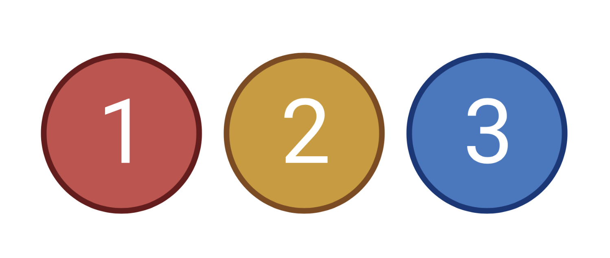

Chapter 6 Counting Reads using HTSeq-Count

The next step is counting the number of reads per gene and exon. For this we will use htseq-count.
htseq-count needs a BAM file and an annotation (gff/gtf) file.
First make a directory to contain our htseq output files.
mkdir htseqWe are now ready to run htseq-count. First we will run it to count the number of reads per gene.
htseq-count \
-m union \
-s yes \
-t gene \
-i ID \
-r pos \
-f bam \
aligned_clean/17_slice.sorted.clean.bam \
slice.FlyBase.gff > \
htseq/17_genecount.htseq-m mode to handle reads overlapping more than one feature (‘union’ means that reads falling across an intron are counted)
-s means our data is stranded, i.e. the sequenced read-pair occur in a particular orientation (for more information see here)
-t feature type (3rd column in GFF file) to be used (e.g. gene or exon)
-i GFF attribute to be used as feature ID. Several GFF lines with the same feature ID will be considered as parts of the same feature. The feature ID is used to identity the counts in the output table.
-r For paired-end data, the alignment have to be sorted either by read name (name) or by alignment position (pos)
-f Format of the input data. bam is specified for binary BAM files
<first flagless option> is the BAM file you are wanting to count reads per feature in
<second flagless option> is the name of the gff file
In this case direct the output to a file we name "17_genecount.htseq" which is a text file.
Lets have a look at the output file that we have generated.
less htseq/17_genecount.htseqThere are two columns, one for the name of the feature, the other for the number of reads mapping to each feature.
We will now run htseq-count again. This time to count the number of reads per exon.
htseq-count \
-m union \
-s yes \
-t exon \
-i ID \
-r pos \
-f bam \
aligned_clean/17_slice.sorted.clean.bam \
slice.FlyBase.gff > \
htseq/17_exoncount.htseq
# To look at the output file
less htseq/17_exoncount.htseqYou now have your read counts per gene and per exon for one of your samples!
6.1 Exercise
Repeat the process in chapters 4, 5, & 6 to map the reads for the second sample 19_slice.
You can load multiple BAM files in IGV to see how they compare.
Tip: Avoid typing all commands for sample 19 from scratch by using the Linux history to go back to the commands for sample 17 and modify these for sample 19.
Questions
- How many reads are in the R1 raw fastq file for 19_slice?
<<<<<<< Updated upstream
- How many reads are in the R1 trimmed fastq file for 19_slice?
- How many total reads are in the pre-filtered mapped bam file for 19_slice?
- How many total reads are in the filtered mapped bam file for 19_slice?
- How many properly paired reads are in the pre-filtered mapped bam file for 19_slice?
- How many properly paired reads are in the filtered mapped bam file for 19_slice?
======= <<<<<<< HEAD
- How many reads are in the R1 trimmed fastq file for 19_slice?
- How many total reads are in the pre-filtered mapped bam file for 19_slice?
- How many total reads are in the filtered mapped bam file for 19_slice?
- How many properly paired reads are in the pre-filtered mapped bam file for 19_slice?
- How many properly paired reads are in the filtered mapped bam file for 19_slice?
=======- How many reads are in the R1 trimmed fastq file for 19_slice?
- How many total reads are in the pre-filtered mapped bam file for 19_slice?
- How many total reads are in the filtered mapped bam file for 19_slice?
- How many properly paired reads are in the pre-filtered mapped bam file for 19_slice?
- How many properly paired reads are in the filtered mapped bam file for 19_slice?
>>>>>>> main >>>>>>> Stashed changesCommands to rerun for 19_slice. We thankfully don't need to make and directories again as we have already created them.
#QC #FastQC of raw reads fastqc -o raw_fastqc_output \ 19_slice_R1.fq.gz 19_slice_R2.fq.gz #Check fastqc reports firefox \ raw_fastqc_output/19_slice_R1_fastqc.html \ raw_fastqc_output/19_slice_R2_fastqc.html & #Quality control trimmomatic \ PE -phred33 \ 19_slice_R1.fq.gz 19_slice_R2.fq.gz \ trimmed/19_slice_R1_out_paired.fastq trimmed/19_slice_R1_out_unpaired.fastq \ trimmed/19_slice_R2_out_paired.fastq trimmed/19_slice_R2_out_unpaired.fastq \ ILLUMINACLIP:TruSeq3-PE.fa:2:30:10 \ LEADING:3 TRAILING:3 SLIDINGWINDOW:4:30 MINLEN:50 #FastQC of trimmed reads fastqc -o trimmed_fastqc_output \ trimmed/19_slice_R1_out_paired.fastq trimmed/19_slice_R2_out_paired.fastq #Firefox of fastqc reports firefox \ trimmed_fastqc_output/19_slice_R1_out_paired_fastqc.html \ trimmed_fastqc_output/19_slice_R2_out_paired_fastqc.html & #Read alignment #We don't need to rebuild the reference as it is already built #hisat2 alignment hisat2 \ -x slice \ -1 trimmed/19_slice_R1_out_paired.fastq \ -2 trimmed/19_slice_R2_out_paired.fastq \ -p 8 \ -q \ --met-file aligned/19_slice.stats | \ samtools sort -O BAM > \ aligned/19_slice.sorted.bam #View info on mapped reads samtools flagstat aligned/19_slice.sorted.bam #Discard unwanted reads samtools view -b -q 40 -f 2 \ -F 12 aligned/19_slice.sorted.bam > \ aligned_clean/19_slice.sorted.clean.bam #Index bam file samtools index aligned_clean/19_slice.sorted.clean.bam #View 17_slice and 19_slice with igv igv & #htseq-count #gene count htseq-count \ -m union \ -s yes \ -t gene \ -i ID \ -r pos \ -f bam \ aligned_clean/19_slice.sorted.clean.bam \ slice.FlyBase.gff > \ htseq/19_genecount.htseq #exon count htseq-count \ -m union \ -s yes \ -t exon \ -i ID \ -r pos \ -f bam \ aligned_clean/19_slice.sorted.clean.bam \ slice.FlyBase.gff > \ htseq/19_exoncount.htseq - How many reads are in the R1 trimmed fastq file for 19_slice?